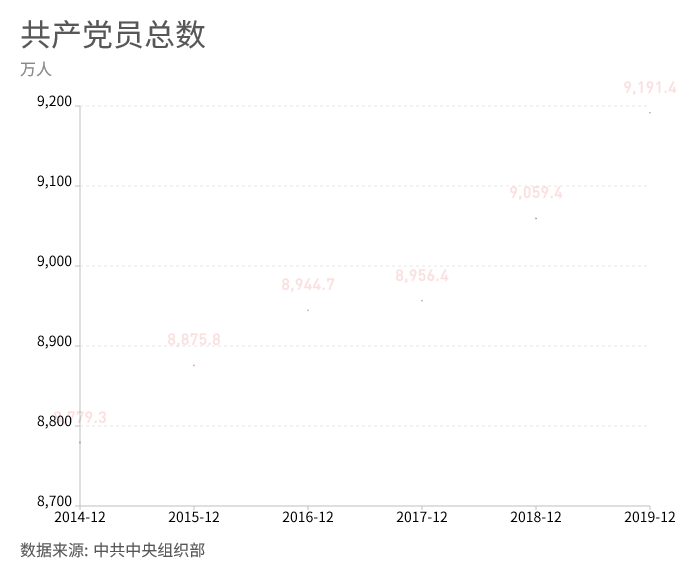
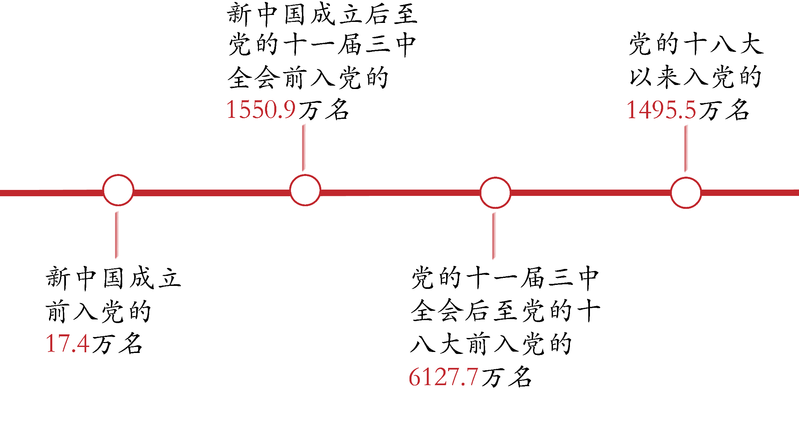

共产党员统计
截至2019年12月31日，中国共产党党员总数为9191.4万名，比上年净增132.0万名。经过100年的发展，中国共产党的党员数量和结构都发生了巨大的变化。
 更多中国共产党的党员数量和结构都发生了巨大的变化,由当初一个50多人的小党发展到现在拥有9000多万党员的大党，显示了党在马克思主义正确的路线、方针和政策的指引下、始终全心全意为人民谋利益的强大吸引力和凝聚力。
中国共产党党员数量的变化能够真实反映并不断因应我国经济社会发展变化的现实，从而能够始终保持马克思主义政党的本色和先进性，进而保持党在国家政治生活中的影响力和凝聚力，使党当之无愧地成为领导中国人民不断开创中国特色社会主义事业发展新局面的核心力量。
关闭注：指向图片可阅读文字
中国共产党现有基层组织468.1万个，其中基层党委24.9万个，总支部30.5万个，支部412.7万个。基层基础保障力度加大，95.8%的社区落实服务群众专项经费，提高2.7个百分点。
党员队伍情况
●党员入党时间
●党员年龄

数据来源：中共中央组织部（注：指向图片可阅读文字）
中央组织部最新党内统计数据显示，截至2019年底，40岁以下党员超过总数的1/3，队伍年龄结构有所改善。
●党员性别、民族、学历
截止2019年底，党员队伍结构持续优化,女党员2559.9万名，占27.9%，比上年提高0.7个百分点；少数民族党员680.3万名，占7.4%，比上年提高0.1个百分点;党员队伍文化程度继续提高，大专及以上学历党员超过半数，达4661.5万名。
●党员的职业
数据来源：中共中央组织部（注：指向图片可阅读文字)
根据中央组织部最新党内统计数据显示，截至2019年底，党员的职业统计如上图，工人和农民仍占主体，占比为34.8%。
发展党员情况
●发展党员的数量
数据来源：中共中央组织部（注：指向图片可阅读文字)
由2014年-2019年的发展党员数量变化统计图可以看出，每一年发展党员的数量都在增加，体现了中国共产党的凝聚力和战斗力不断增强，党的组织体系更加健全，党的执政根基进一步夯实。
●发展党员的性别、民族、年龄和学历
数据来源：中共中央组织部（注：指向图片可阅读文字)
截止2019年底，在产业工人、青年农民、高知识群体和非公有制经济组织、社会组织中发展党员数量增加明显。
●发展党员的职业
•工人（工勤技能人员）14.3万名
•企事业单位、社会组织专业技术人员31.6万名
•企事业单位、社会组织管理人员25.3万名
•农牧渔民42.4万名
•党政机关工作人员134.万名
•学生84.4万名
•其他职业人员22.9万名
•在生产、工作一线发展党员122.2万名
申请入党情况
党组织情况
●党的地方委员会
全国共有党的各级地方委员会3202个
省（区、市）委31个
市（轴）委397个
县（市、区、旗）委2774个
●城市街道、乡镇、社区（居委会）、行政村党组织
全国8636个城市街道、31062个乡镇、105257个社区（居委会）、533824个行政村已建立党组织，覆盖率均超过99%。
●机关、事业单位、企业和社会组织党组织
全国共有机关基层党组织72.3万个，事业单位基层党组织91.3万个，企业基层党组织147.7万个，社会组织基层党组织14.2万个，基本实现应建尽建。